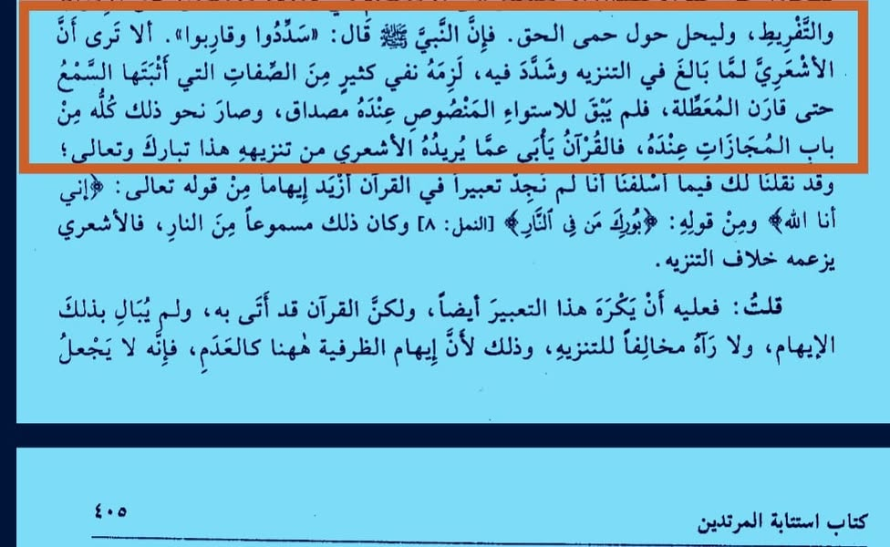

আশআরিগন মুয়াত্তিলা তথা জাহমিয়া ও মু'তাযিলাদের সঙ্গে মিশে গেছে
২৭ জুন, ২০২৪
“আশআরিগন মুয়াত্তিলা তথা জাহমিয়া ও মু'তাযিলাদের সঙ্গে মিশে গেছে।”
ইমামুল হিন্দ শাহ আনওয়ার কাশ্মিরি রাহ. বলেন—
“আশআরি তানযিহ করতে গিয়ে যখন বাড়াবাড়ি আর কঠোরতা অবলম্বন করেন, তখন কোরআন-সুন্নাহ দ্বারা সুসাব্যস্ত অনেক সিফাত নাকচ করা আবশ্যক হয়ে পড়ে। শেষমেশ তারা একদম মুয়াত্তিলা (জাহমিয়া-মু'তাযিলা) ফেরকার সাথে মিশে যায়। ফলে তাদের নিকট 'আল্লাহ ইস্তেওয়া করেছেন’ এ নসের কোনো বাস্তবতাই বাকি থাকে না; বরং এমন সব সিফাতই তাদের কাছে রূপক হয়ে যায়। সুতরাং, আশআরিরা আল্লাহ'র তানযিহ দ্বারা যা উদ্দেশ্য নেয়, কোরআন তা অস্বীকার করে।” [ফায়জুল বারি—৬/৪০৪, শামেলা]
বাস্তবতাও তাই। আশআরি-মাতুরিদিগনের কথিত তানযিহের উদাহরণ হল ঐ খতনাকারীর ন্যায়— যে বাচ্চার মুসলমানি করে অতিরিক্তাংশ কেটে ফেলতে যেয়ে মেশিনের গোড়া কেটে ফেলে দেয়। এ লোক যেমন বিপদজনক কালামিদের আকিদাহও তেমনই বিপদজনক।
“আশআরিগন মুয়াত্তিলা তথা জাহমিয়া ও মু'তাযিলাদের সঙ্গে মিশে গেছে।”
ইমামুল হিন্দ শাহ আনওয়ার কাশ্মিরি রাহ. বলেন—
“আশআরি তানযিহ করতে গিয়ে যখন বাড়াবাড়ি আর কঠোরতা অবলম্বন করেন, তখন কোরআন-সুন্নাহ দ্বারা সুসাব্যস্ত অনেক সিফাত নাকচ করা আবশ্যক হয়ে পড়ে। শেষমেশ তারা একদম মুয়াত্তিলা (জাহমিয়া-মু'তাযিলা) ফেরকার সাথে মিশে যায়। ফলে তাদের নিকট 'আল্লাহ ইস্তেওয়া করেছেন’ এ নসের কোনো বাস্তবতাই বাকি থাকে না; বরং এমন সব সিফাতই তাদের কাছে রূপক হয়ে যায়। সুতরাং, আশআরিরা আল্লাহ'র তানযিহ দ্বারা যা উদ্দেশ্য নেয়, কোরআন তা অস্বীকার করে।” [ফায়জুল বারি—৬/৪০৪, শামেলা]
বাস্তবতাও তাই। আশআরি-মাতুরিদিগনের কথিত তানযিহের উদাহরণ হল ঐ খতনাকারীর ন্যায়— যে বাচ্চার মুসলমানি করে অতিরিক্তাংশ কেটে ফেলতে যেয়ে মেশিনের গোড়া কেটে ফেলে দেয়। এ লোক যেমন বিপদজনক কালামিদের আকিদাহও তেমনই বিপদজনক।
